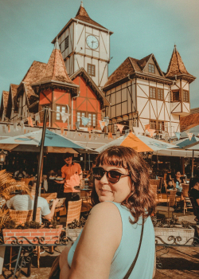

Bora pra onde dessa vez?
Diga de onde você sai e quanto tempo de viagem aceita. A gente mostra para onde dá para ir — de ônibus, de carro ou de avião.
4,8 de média nas avaliações de quem já viajou
Para onde agora?
— destinos combinam com a sua busca agora
Para onde dá para ir agora
Atualiza conforme você mexe na busca acima.
Começar por uma ideia
Recortes prontos de quem não sabe ainda para onde quer ir.

Três passos entre a vontade e a viagem
Diga de onde você sai
Origem e tempo de viagem que você aceita. Só isso — o resto é refinamento opcional.
Veja o que combina
A lista muda na hora, com preço médio por pessoa e como se chega em cada destino.
Monte a viagem
Salve, compare e organize com quem vai junto. A reserva você faz onde preferir.

Vai viajar com outras pessoas?
Votem no destino juntos, dividam os custos e acompanhem o checklist no mesmo lugar. Depois da viagem, monte o álbum e compartilhe com quem foi.
Lugares para suas memórias acontecerem
Hospedagens, restaurantes e passeios conferidos pela nossa curadoria, com a data da última checagem sempre à vista.
Lugares para a próxima viagem
Uma amostra do que a curadoria conferiu recentemente.
O verde aqui significa uma coisa só: alguém foi conferir
- Hospedagem, restaurante e passeio checados antes de entrar na lista.
- A data da última checagem fica visível em cada ficha — você sabe o quanto a informação envelheceu.
- O preço médio por pessoa serve para comparar destinos, não como cotação fechada. A gente diz isso na cara.
Viajar com gente é bom. Combinar com gente é que é difícil.
Votação do destino, rateio dos custos, checklist e álbum da viagem no mesmo lugar — para o grupo parar de decidir no grupo de mensagens.
no plano anual
/mês
ou /mês no mensal
Ver os planos Ou passe de 30 dias porSem fidelidade. O passe não renova.
Você tem um hotel, restaurante ou passeio?
Cadastre seu local na mesma conta que você usa para viajar e ele aparece para quem acabou de escolher o destino. Dá para administrar os dois lados trocando de modo no topo da página.
Anunciar meu local
Perguntas frequentes
Preciso criar conta para buscar destinos?
Não. A busca e os resultados são abertos. A conta só é necessária para salvar destinos e usar as funcionalidades premium.
De onde vêm as estimativas de preço?
São valores médios por pessoa para o período de noites indicado, considerando hospedagem e passeios. Servem para comparar destinos, não como cotação fechada.
O que significa um destino verificado?
Nossa curadoria confere hospedagens, restaurantes e passeios antes de recomendar, e a data da última checagem fica visível na ficha do local.
Vocês vendem passagem ou pacote?
Não. O Boralá! ajuda na etapa anterior: decidir para onde ir. A reserva você faz onde preferir.